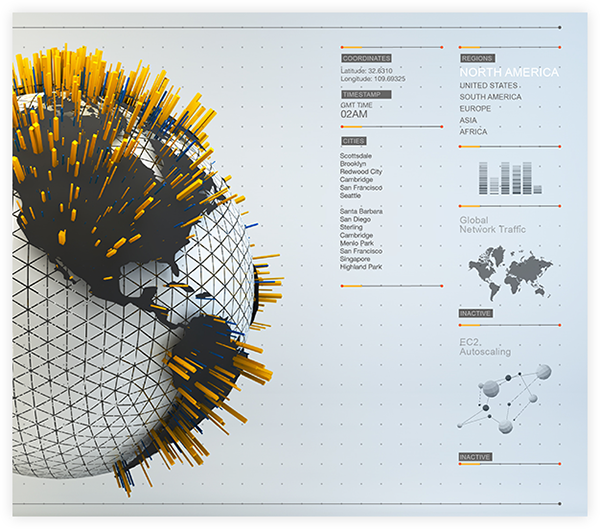
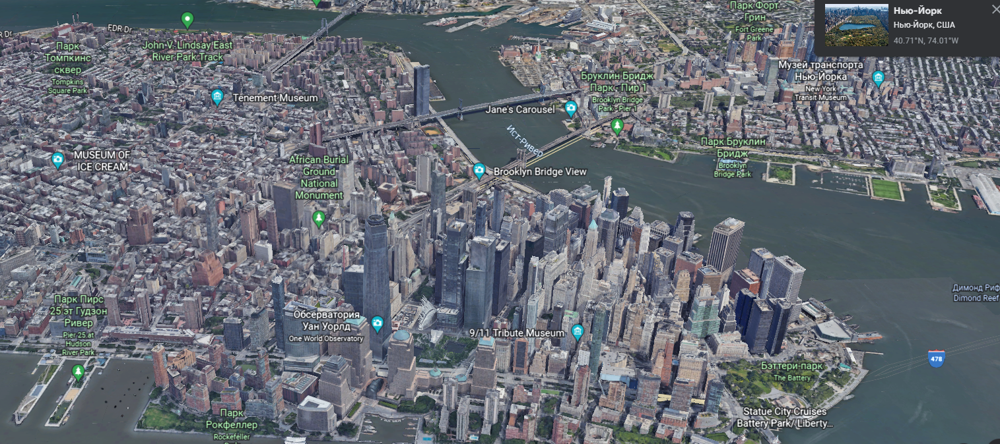
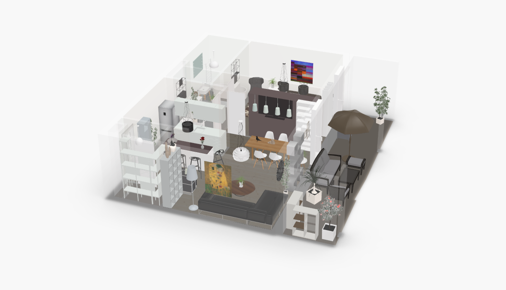
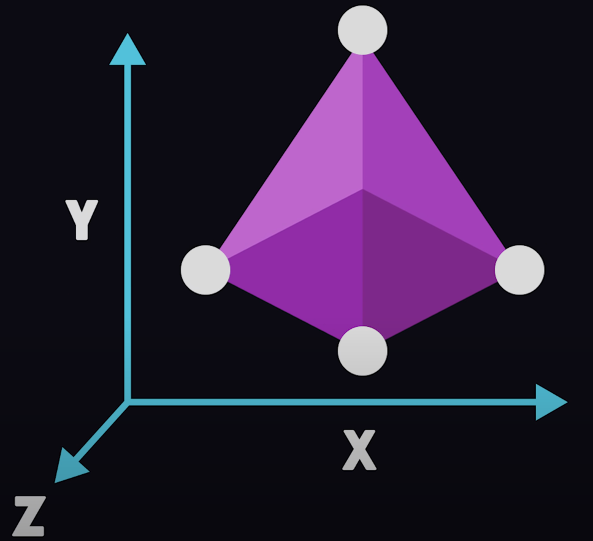
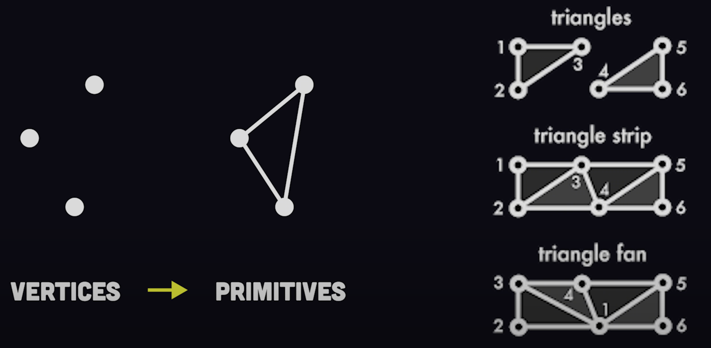
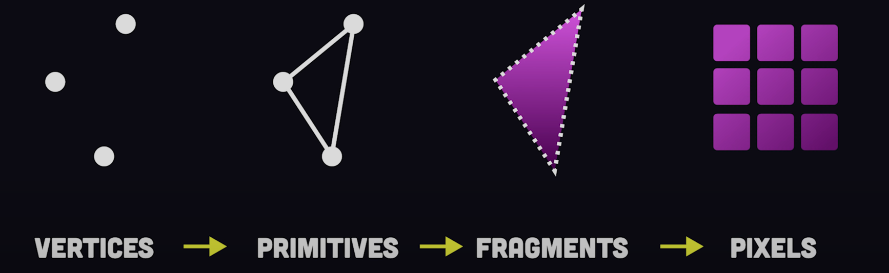
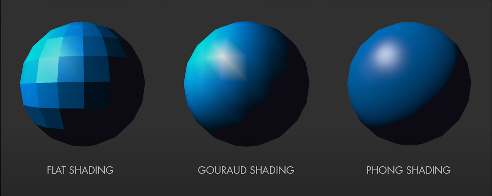

WebGL
Hi, my name is Eugene Tsalko, i'm a student in RSSchool and today i'd like to talk to you about WebGL.
WebGL (Web Graphics Library)
- is a JS API for implementing interactive 2D and 3D vector graphics in the browser.
WebGL or Web Graphics Library - is a javascript API for implementing interactive 2D and 3D vector graphics in the browser.
It allows to run graphics with the client's GPU inside an HTML
canvas tag with no need for external plugins.
It allows developers to run hardware accelerated graphics with the client's GPU directly inside an HTML
canvas tag without the need for external plugins.
History:
WebGL - Mozilla Foundation's open web standard.
A little bit from history:
1)WebGL is a Mozilla's foundation's cross-platform, royalty-free open web standard
WebGL - Mozilla Foundation's open web standard.
Written in JS and OpenGL ES Shading language.
2) WebGL programs consist of control code written in JavaScript and shader code written in OpenGL ES Shading Language, a language similar to C or C++,
and is executed on a computer's GPU.
WebGL - Mozilla Foundation's open web standard.
Written in JS and OpenGL ES Shading language.
Initial release - 2011, stable release - 2017.
3) Initial release was in March of 2011, stable release - in January of 2017.
3D web design:
3D web design - it allows you to add complex and smooth animations with 3D objects. Here are some examples.
Data vizualization:

Data visualization - D3.js, Springy.js, Raphael.js and other are some of the various
libraries available for creating online data visualizations and infographics.
Maps:

Google Maps
Maps - WebGL is used to render Graphics in everyday tools like Google Maps and Google Earth.
Any form of topographic map can greatly benefit from 3D representations.
Architecture/floorplanning:

Roomle
Architecture - The field of architecture and 3D are two things that goes hand in hand and
3D viewing is becoming more widely available in the architecture industry.
Web-based games
Medicine
E-commerce
Artwork
etc.
- Games are the first WebGL example that comes to mind,
the two most popular game engines for the web platform are Unity and PlayCanvas.
- In medicine you can make interactive 3D models of the internal organs of living beings with the help of WebGL.
- In E-commerce 3D graphics have a multitude of uses, ranging from simple product presentations,
to product customization and realistic previews of different materials.
- Artwork - this may be one of the most important applications of WebGL in general - the creativity of artists
and illustrators across the globe combined with the power and freedom that WebGL provides.
How it works?
To understand how WebGL works it helps to first understand basic 3D theory and the rendering pipeline.
3D scene:

In fact, all WebGL can do is draw triangles. But it can draw them very quickly and in large numbers.
If you want a square, connect two triangles. You want a line? OK, it's just a few triangles connected in series.
In a 3D scene every point is a vertex identified by an X, Y and Z coordinates.
3D scene render:

The vertices are then connected together to form a bunch of little triangles, known as primitives
3D scene render:

Then a light source bounces off of them to create the appearance of shadows and depth perception. They are then rasterized to convert a 3D vector graphic into a projection of a 2D pixel,
which tricks our brains into seeing a 3D object on a two-dimensional computer screen.
3D scene shading:

This pipeline can be customized by writing shaders,
which are just functions that tells a computer how to draw pixels on the screen.
Shading requires the computer to perform a ton of linear algebra or matrix multiplication to render graphics smoothly at 60fps.
It's often too much for the CPU to handle by itself which is why we have GPUs to distribute the calculations more efficiently.
WebGL allows us to process graphics on a GPU and it's based on a library that's been around since 1992 called OpenGL.
Start drawing:
const canvas = document.querySelector("#myCanvas");
const gl = canvas.getContext("webGl");
To get started you just need to grab an HTML canvas in the DOM and then get it's WebGL context to start drawing.
JS control code:
function drawIn3d() {
webGlUtils.resizeCanvasToDisplaySize(gl.canvas);
const primitive = gl.TRIANGLES;
gl.drawArrays(primitive, 0, 5);
}
The main program code is written in JavaScript, but shaders are written in the OpenGL ES-shading language.
OpenGL shaders:
attribute vec2 a_position;
uniform vec2 u_resolution;
uniform vec2 u_translation;
void main() {
vec2 position = a_position + u_translation;
vec2 zeroToOne = position | u_resolution;
}
A Shader will take information about a vertex or fragment
and use the GPU to calculate the data required to render it as a pixel on the screen.
This looks hard...
Luckily you don't need to write shaders by hand. To start adding 3D graphics to
your website you can use libraries like Three.js or tools like Spline.Design to quickly design 3D experiences without
much underlying knowledge of WebGL.
Libraries/tools:
This slide contains links to the tools I mentioned earlier.
Why is WebGL used?
Performance - WebGL is extremely fast and takes full advantage of hardware acceleration
Given the abundance of graphical display technologies available such as CSS, Canvas, SVG and plugin-based solutions
like Silver Flight and Flash you may be wondering where WebGL fits in and whether you need to learn it,
so let have a look at some of the reasons why you should:
Performance - WebGL is extremely fast and takes full advantage of hardware acceleration making it ideal for games and sophisticated visuals.
Tasks - it can perform and render functions that other technologies can't or more precisely can't so well
Tasks - it can perform and render functions that other technologies can't or more precisely can't so well.
For example creating intricate lighting and reflecting material effects with SVG can be a real head scratcher but
it could be easily pulled off using WebGL.
Shaders - to create complicated visual effects WebGL apps can use shaders.
Shaders - to create complicated visual effects WebGL apps can use shaders.
A basic Shader may represent water or flames while a more complicated version could provide difficult effects.
Thanks for your attention!
As you can see WebGL opens up a lot of doors for web developers, game designers, animators and visual artists.
When used in conjunction with HTML5 features you may construct powerful and professional web browser-based apps. So, Thanks for your attention!